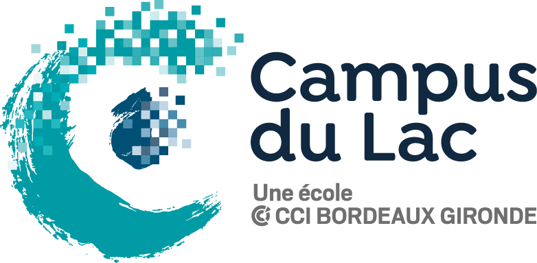

ma formation
ce que j'ai appris
- Gestion de projet web
- Concepts clés de la gestion de projet
- Organisation et planification d’un projet
- partie front-end d'un site web
- Enjeux de l’UX et l’UI
- HTML - CSS - responsiv design
- Interface web dynamique
- Norme Mobile App
- Bases de l’algorithmique et sa maîtrise
- Gestion de site e-commerce
- Principe de Workflow
- Enjeux de l’optimisation et du référencement
- Crée une base de données
- Système de gestion de base de données SQL
- L'asynchrone / AJAX / XML / J-SON
- Composants d'accès aux données
- PHP - Programmation orientée objet
- Partie back-end d'un site web
- Javascript - React - Angular
- Gestion de contenus ou e-commerce
- Wordpress - Prestashop
Compatible Mobile, Tablette et PC
Développement Web Responsive
Mes Compétences
à votre services
Domaine de compétences
- Gestion de projet
- Site Vitrine - e-commerce - application mobile
- conception graphique et webdesign
- Logo - Template - plaquette publicitaire - affiche - carte de visite
- Application spécifique
- PHP - MYSQL - AJAX - JSON
- Intégration HTML / CSS
- HTML - CSS codé à la main
- Dynamisme des pages
- JavaScript - jQuery - Ajax
- Référencement SEO
- érgonomie & accessibilité des pages
- Design Responsive
- conception multi-support - mobile - pc - tablette
Compétences de développement
- html / css
- php
- javascript
- mysql
Compétences en graphisme
- photoshop
- illustrator
- in design
- adobe xd
Actuellement en formation
Portfolio
Ce que j'ai réalisé
Mon Super Blog
Ce blog a été réalisé dans le cadre d'un exercice.
Proposé par : Graphikart
Langages utilisés


Projet Social
Ce reseau social a été réalisé dans le cadre d'un exercice.
Proposé par : Graphikart
Langages utilisés
Projet Run
Ce site vitrine a été réalisé dans le cadre de ma formation.
Une maquette nous à été fournis.
- GitHub du projet > ici
Langages utilisés
Montain View
Ce site vitrine a été réalisé dans le cadre de ma formation.
Une maquette nous à été fournis.
- GitHub du projet > ici
Langages utilisés
Collectif Anda
Ce site web a été réalisé à la demande de l'association Anda dont je fais partie
Le design à été fait par une graphiste
Langages utilisés


Gaming Campus
Ce site vitrine a été réalisé dans le cadre de ma formation.
Une maquette nous à été fournis.
- GitHub du projet > ici
Langages utilisés
Passioné et motivé
Je souhaite en faire mon métier

Qui Suis-je
je me présente à vous
Passionné par le développement
Passionné par l'informatique depuis mon adolescence, j'ai commencé la programmation à l'age de 13ans.
Ma première expérience sur le langage de script m'a rapidement enmené à me tourner vers des langages de programmation tel que Perl et Python pour finir avec HTML/CSS ainsi que PHP pour la création de site internet.
Dès lors, je n'ai eu cesse de vouloir progresser continuellement sur ces langages et approfondir mes connaissances. C'est donc tout naturellement que je me suis tourné vers le JAVASCRIPT. J'aime apprendre et découvrir de nouvelles fonctionnalitées.

Mon expérience à votre service
Ma passion m'a emmené à développer divers sites internet en tout genre.
Du blog au site plus qualitatif en passant par divers CMS tel que Wordpress ou Drupal, je sais mettre mon expérience à profis afin de finaliser les projets dans lesquels je me lance.
De plus, ma formation Développeur Web & Web Mobile ne fait qu'accroître mes connaissances déjà bien établie.